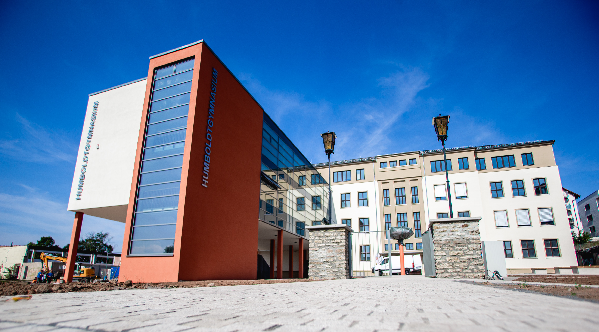

Das Wilhelm-von-Humboldt-Gymnasium Nordhausen ist eines von zwei Gymnasien in der Stadt Nordhausen und blickt auf eine lange und traditionsreiche Geschichte zurück. Seine Ursprünge reichen bis ins Jahr 1524 zurück, als eine Lateinschule gegründet wurde – damit gehört es zu den ältesten Bildungseinrichtungen der Region.
Heute ist das Gymnasium eine moderne staatliche Schule, die Schülerinnen und Schüler von der 5. bis zur 12. Klasse auf das Abitur vorbereitet. Es wird von mehreren hundert Lernenden besucht und bietet sowohl Ganztagsangebote als auch eine Vielzahl an Arbeitsgemeinschaften und Projekten.
Ein besonderer Schwerpunkt der Schule liegt im MINT-Bereich (Mathematik, Informatik, Naturwissenschaften und Technik) sowie im Sport. Schülerinnen und Schüler können an Wettbewerben wie „Jugend forscht“ oder der Mathematik-Olympiade teilnehmen und sich in verschiedenen sportlichen Disziplinen engagieren.
Auch das Fremdsprachenangebot ist vielfältig: Neben Englisch werden unter anderem Französisch, Latein und Spanisch unterrichtet. Zusätzlich bestehen internationale Kontakte, beispielsweise zu Partnerschulen im Ausland.
Das Leitbild der Schule lässt sich mit dem Motto „Zukunft hat Tradition“ zusammenfassen. Es verbindet die lange Geschichte des Gymnasiums mit modernen Bildungsansätzen und orientiert sich – ganz im Sinne seines Namensgebers Wilhelm von Humboldt – an einer ganzheitlichen und individuellen Förderung der Schülerinnen und Schüler.